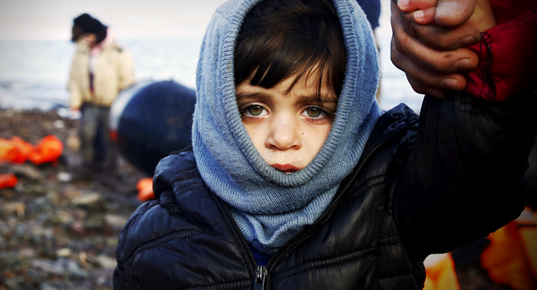

아프가니스탄 귀환민 스토리
소련의 아프가니스탄 점령 하에 가족과 파키스탄으로 떠나던 당시 그는 겨우 십대 소년이었다.
그들은 그 날의 이주가 영구적일 것이라고는 결코 생각하지 못했다.
그러나 수십 년이 지나고 하나의 분쟁이 또 다른 갈등으로 녹아들면서, 고향으로 돌아갈 수 있다는 희망은
도달 가능한 현실이 아닌 희미해진 꿈처럼 점점 더 멀게 느껴졌다.
2016년, 카윰 칸은 파키스탄에서 나고 자란 일곱 자녀를 포함한
그의 가족과 함께 아프가니스탄에 돌아가기로 결정했다.
